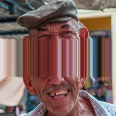

セグメントストレッチ

レイヤーを線に沿って切り、両側を引き離して、線上のピクセルを隙間へ引き伸ばします。
設定
| 設定項目 | 種類 | 範囲 | デフォルト |
|---|---|---|---|
| 角度 | 角度 | -360°〜360° | 0° |
| 引き伸ばし | 数値 | 0〜5000 | 10 |
| オフセット | 数値 | -5000〜5000 | 0 |
| 広がり | 数値 | 0〜500 | 0 |
| レイヤーサイズで計測 | オン／オフ | – | オフ |

レイヤーを線に沿って切り、両側を引き離して、線上のピクセルを隙間へ引き伸ばします。
| 設定項目 | 種類 | 範囲 | デフォルト |
|---|---|---|---|
| 角度 | 角度 | -360°〜360° | 0° |
| 引き伸ばし | 数値 | 0〜5000 | 10 |
| オフセット | 数値 | -5000〜5000 | 0 |
| 広がり | 数値 | 0〜500 | 0 |
| レイヤーサイズで計測 | オン／オフ | – | オフ |